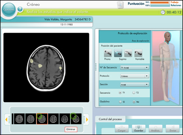

| Detección de artefacto y control de calidad de imagen |
|
| Se define como artefacto a cualquier alteración en la imagen adquirida, que no se corresponde con una estructura anatómica real.
De manera habitual, tanto la correcta preparación del paciente, las instrucciones correctas al mismo antes del comienzo del estudio y el adecuado ajuste del equipo según pautas descritas por el fabricante, serán medidas suficientes para reducir al máximo la aparición de artefactos. |
|
 |
|
Uno de los posibles artefactos más habituales es el producido por los movimientos respiratorios o latidos cardiacos del paciente. El equipo puede ajustarse para sincronizarlo con un determinado ciclo respiratorio o cardíaco.
En otras ocasiones es difícil prever un deslazamiento de asas intestinales que alteran la morfología de las imágenes de manera involuntaria.
Otro de los artefactos son los producidos por partículas metálicas dentro del paciente como prótesis articulares, metralla metálica ocular, material de osteosíntesis, pendientes o incluso determinados tatuajes. |
|
| » Volver |